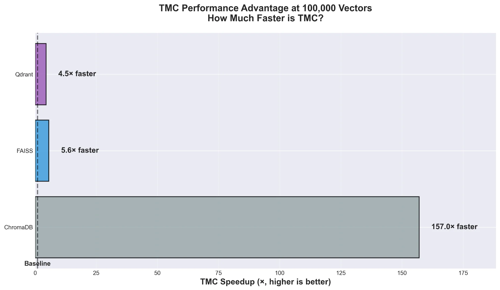
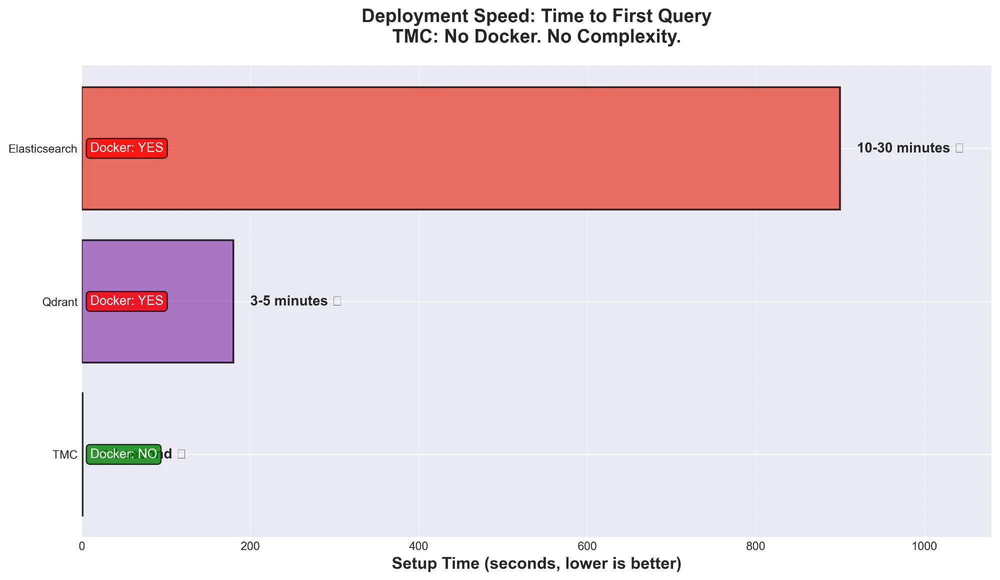

Benchmark Results
100,000 vectors • MacBook Pro (Apple Silicon) • December 25, 2025

Performance Advantage
TMC is 157× faster than ChromaDB, 5.6× faster than FAISS, and 4.5× faster than Qdrant at 100K vectors.

Consistent at Scale
FAISS degrades 48× as data grows. TMC stays at 0.43ms whether you have 1,000 or 100,000 vectors.

Zero Setup Time
Elasticsearch takes 10-30 minutes. Qdrant needs 3-5 minutes. TMC starts in under 1 second. No Docker required.

Lower Total Cost
Save $6,500 vs Elasticsearch, $2,700 vs Qdrant over 6 months. Same workload, fraction of the cost.
Raw Numbers
| System | Mean Latency | P99 Latency | vs TMC |
|---|---|---|---|
| TMC | 0.43ms | 0.52ms | Baseline |
| Qdrant | 1.93ms | 4.04ms | 4.5× slower |
| FAISS | 2.42ms | 3.08ms | 5.6× slower |
| ChromaDB | 67.57ms | 94.16ms | 157× slower |